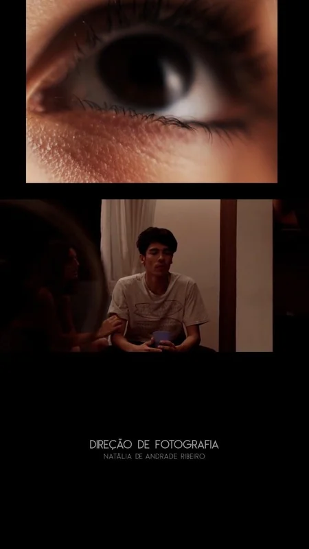

Curta-metragem · 2021
Maria e as Terças-Feiras

Assistir no YouTubeO projeto
Um filme sobre os amores que surgem em dias comuns e seus desdobramentos emocionais.
Minha participação
Atuei como diretora de fotografia e operadora de câmera durante as três diárias de filmagem em Santo André.
Março de 2021